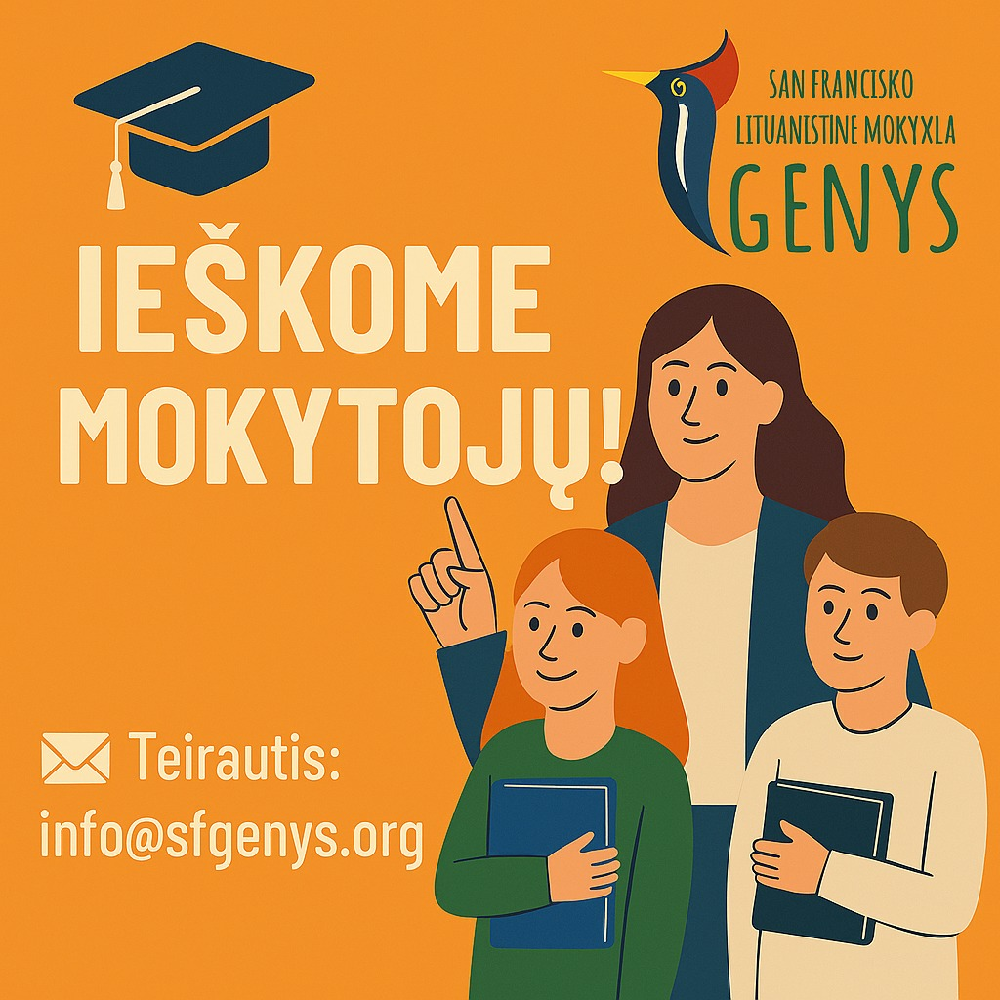
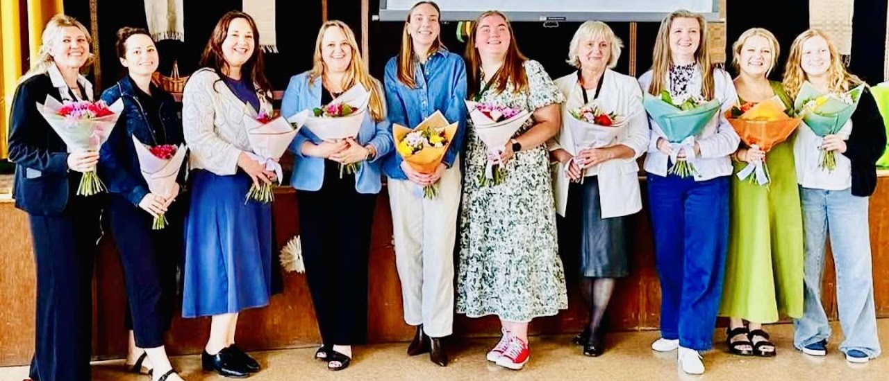
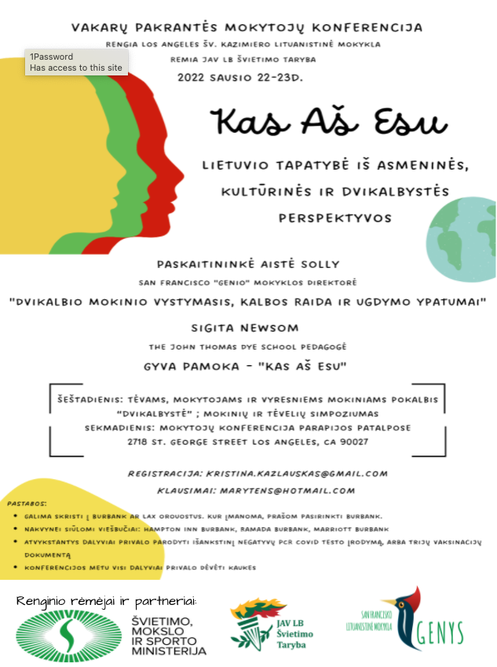
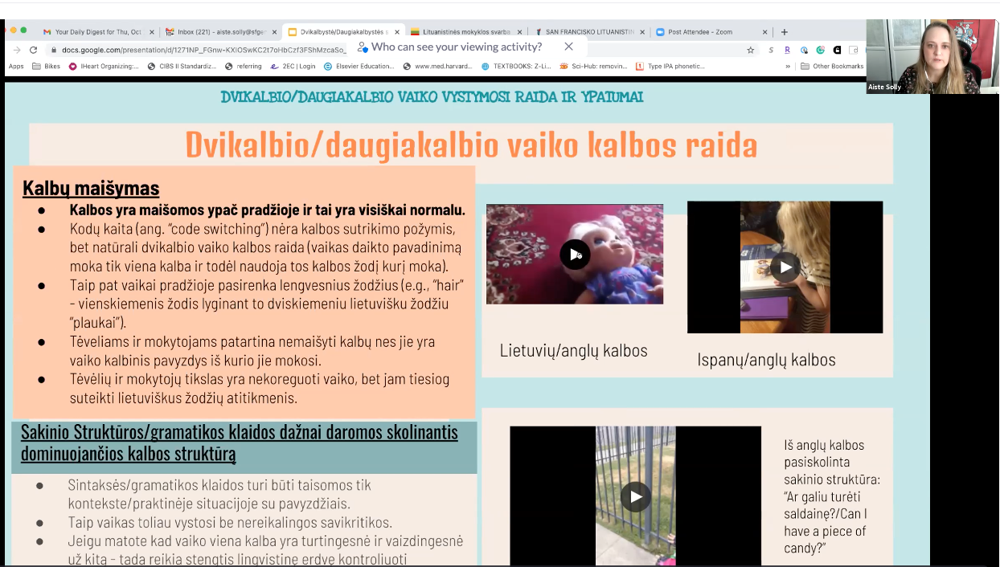
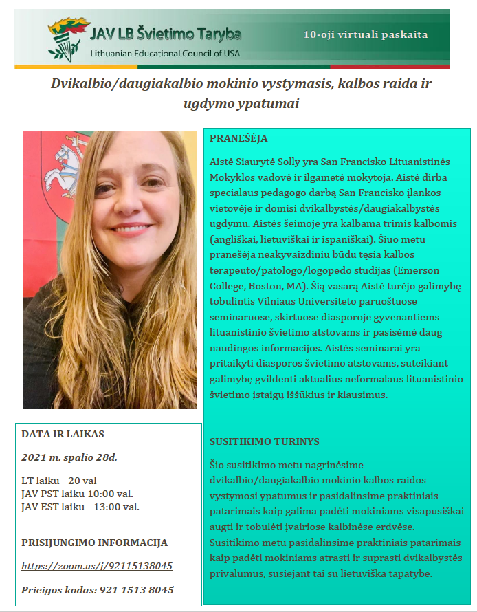
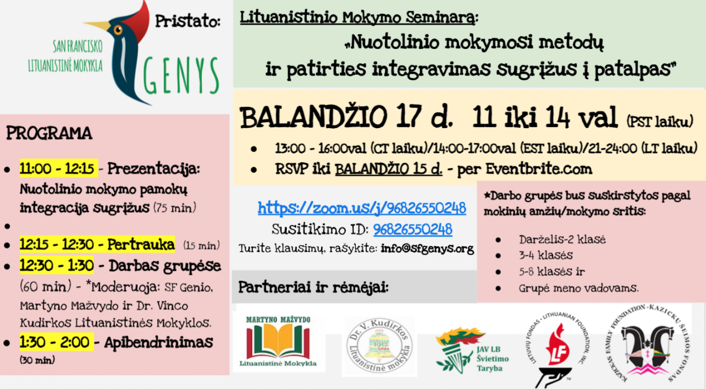

PEDAGOGAMS
Informacija pedagogams
Seminarų medžiaga, įrašai ir mokyklos komandos pranešimų archyvas.
Seminarai ir 2025–2026 mokslo metų skelbimų archyvas

2025–2026 mokslo metams - IEŠKOME MOKYTOJŲ!
Jeigu norite dirbti kartu su dinamiška, kūrybiška ir lietuvybės puoselėjimui atsidavusia komanda – prisijunkite prie mūsų!
Kartu kuriame aplinką, kurioje vaikai mokosi lietuvių kalbos, tradicijų ir džiaugiasi bendryste.
Daugiau informacijos: www.sfgenys.org
Susisiekite: info@sfgenys.org
KANDIDATO ANKETA: https://forms.gle/nQgsXm3UtGbZoyxB9



SEMINARO SKAIDRĖS

SEMINARO įrašas


Širdingas ačiū kad dalyvavote seminare - balandžio 17d.!
Dalinamės seminaro nuorodomis:
1) Pagrindinės „Nuotolinio mokymosi metodų ir patirties integravimas sugrįžus” seminaro skaidrės - Autorė: Aistė Solly (San Francisko Lituanistinės Mokyklos „Genys" vadovė)
https://docs.google.com/presentation/d/1WiYyiq1tXnUIiYFrG9rvpYk87Xk4ipyN8plbOB08fSQ/edit?usp=sharing
Seminaro įrašas:
2) „Nuotolinė Muzikos Pamoka" - Autorė: Justė Kazekavičiūtė (Džiazo pianistė (LMTA), talentinga muzikantė bei pedagogė (Vilnius)
https://drive.google.com/file/d/1Pa2OdgtiL_3WEDtdqzL8o8HH0mUek4ov/view?usp=sharing
3) „Mišrusis mokymas" - Vilma Pažėraitė Alkhas - Martyno Mažvydo LM Mokyklos Vadovė
https://drive.google.com/file/d/1iMs_jDaxBD0xhid4jKSPwiSxT10P60Uu/view?usp=sharing
4) „Pamokos paugliams" - Indrė Kazakauskaitė (San Francisko Lituanistinės Mokyklos “Genys” 7/8 klasės Mokytoja)
https://drive.google.com/file/d/1FlW3gsDQ5QoFJdIqHLPajrYkaiuJOUHB/view?usp=sharing
5) „Interakytyvūs žaidimai" - Autorė: Aurelija Bolšakova (San Francisko Lituanistinės Mokyklos “Genys” 2/3 klasės Mokytoja)
https://drive.google.com/file/d/1uynMs7HOQ366b39mEEc_HuwQ449TGiZf/view?usp=sharing
6) "Meno Vadovo patirtis" - Autorė: Vanesa Kašelionis (San Francisko Lituanistinės Mokyklos “Genys” Meno Vadovė).
https://drive.google.com/file/d/1h_CamH1IzN6sGxiHR-kxzoBJiJJ_erHL/view?usp=sharing
Naudingos nuorodos
naudingos nuorodos – atverti šaltinio vaizdą